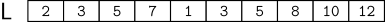
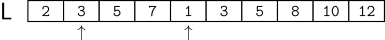

Contando Inversões
Imagine que nós temos uma lista de N inteiros L e um inteiro meio tal que L[0..meio− 1] e L[meio..N − 1] que estão ordenadas.
Note que a lista L pode não está ordenada.

Se a lista não estiver desordenada, nós sempre podemos encontrar dois elementos fora de ordem — (i.e., o elemento da esquerda é maior do que o elemento da direita)
Por exemplo,

Nós dizemos que um par desse tipo corresponde a uma inversão. Note que não existe inversões na lista L[0..meio − 1] e L[meio..N − 1].
A tarefa desse problema consiste em
Contar o número total de inversões na lista L
No exemplo acima, isso nos daria
=> 7 inversões no total
Elabore um programa que resolve esse problema com complexidade O(N)